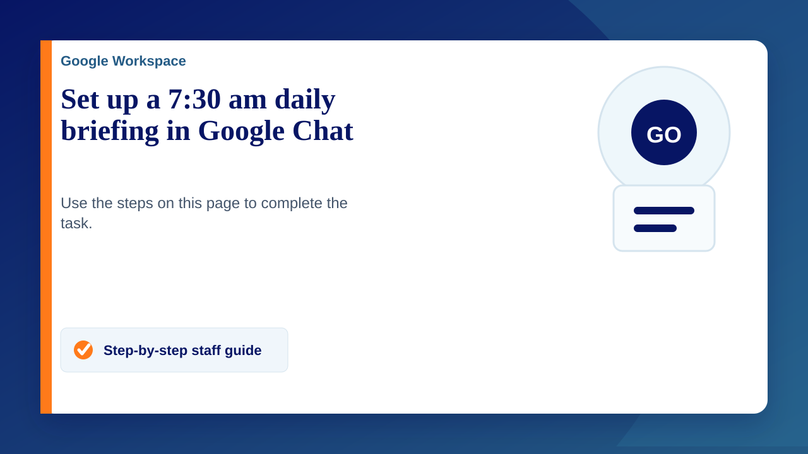
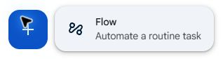
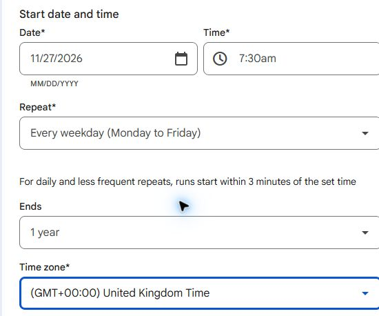
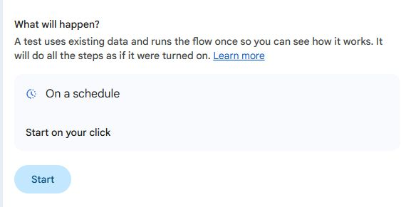
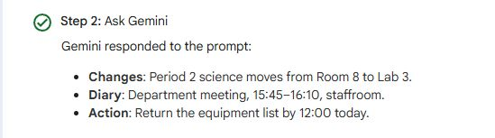
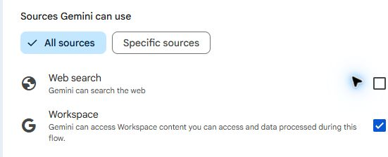
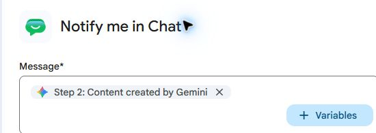
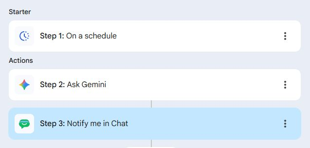

Too many emails and calendar invites to keep track of? Build a short weekday briefing for yourself in Google Chat. This guide is for teaching, admin and office staff.
The briefing brings together today’s appointments, relevant unread emails, changes and deadlines. It can help with a busy office diary as well as classroom notices. Choose a time that suits you; this example uses 7:30 am.
1. Start a new flow
On a computer, open studio.workspace.google.com in Chrome. Check that your school account is selected. On the left, click the blue + (Add tool) and choose Flow. Name it My daily briefing using the title at the top.

Start with an empty flow. You’ll add the Chat action after you have seen a practice result.
2. Set the weekday schedule
Choose On a schedule as the starter. Use the calendar icon to pick the first working day you want it to run.
- Time — select 7:30am.
- Repeat — choose Every weekday (Monday to Friday).
- Ends — choose when the briefing should stop.
- Show more — set Time zone to United Kingdom Time.
The weekday setting includes school holidays. Pause it for holidays or leave, or choose the days that suit your working pattern. Studio allows up to three minutes after the set time for the flow to start.

3. Try it with fictional notices
The fictional classroom notices below let anyone practise safely, including office staff. They are only sample data.
Click Add step and choose Ask Gemini. Under Sources Gemini can use, choose Specific sources and leave the Drive file list empty. Keep Text as the response format. Replace everything in Enter a prompt with the practice text below.
Check that the editor contains exactly two steps, On a schedule and Ask Gemini. Choose Test run, then Start. The scheduled starter runs on your click for this test. Read the response under Step 2.


4. Use your inbox and diary
Open Step 2 · Ask Gemini again. Replace the practice text with the briefing prompt below. Under All sources, untick Web search and leave Workspace ticked. Keep the response format as Text.

If school guidance permits a trial with your own data, you can test the two-step flow again now. Compare its diary with Calendar and its actions with the original emails. Check at least one event time and one deadline. A missing item in the briefing is a reason to check the source.
The three-day email window catches Friday morning onwards when the flow runs on Monday. Change it if you need a different look-back. A timetable kept only in another school system is outside this flow.
Make it suit your day (optional)
Add either example to the end of the morning briefing prompt. You can change the wording to suit your work.
5. Send the finished text to yourself
Click Add step. Under Chat, choose Notify me in Chat. Click inside Message, then choose + Variables → Step 2: Ask Gemini → Content created by Gemini.

Studio saves your work automatically while the flow is off. From this point, Test run → Start sends a real notification to your Google Chat. Choose it only if you want that message.
6. Turn it on, pause it or make changes
Start the weekday briefing. Check the three steps against the picture. When you want regular messages, click Turn on and review any prompts. After the next scheduled run, check Activity in the editor and look for the notification in Google Chat.
Pause for the holidays. Open Flows, find your briefing and choose its three-dot menu → Turn off. Reopen it and choose Turn on when you want it back.
Edit the time or wording. In Flows, click the briefing, then the relevant step. Changes to a draft save automatically. If the flow is on, choose Save changes to apply your edits.

Keep the briefing personal
Workspace access can include other material you can open. Asking for Gmail and Calendar narrows the task, but the prompt is not an access control. Use the personal Chat notification and follow school guidance on handling confidential information. Keep pupil names and case details out of prompts and shared screenshots.
Verify appointment and meeting changes against the original notice. Teaching staff should also check cover and room changes against the school’s current timetable or cover notice. Continue to use the usual safeguarding and urgent reporting channels. The 7:30 briefing cannot pick up changes that arrive later.